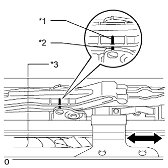

СИСТЕМА ЛЮКА > ИНИЦИАЛИЗАЦИЯ |
| ИНИЦИАЛИЗИРУЙТЕ ПРИВОДНОЙ МЕХАНИЗМ ЛЮКА В СБОРЕ |
Инициализация электронной системы
| Состояние люка | Следующий шаг |
| Функция автоматического открывания/закрывания сдвигом / подъема/опускания не действует. | Процедура A |
| Люк приводится в движение автоматически, однако стекло люка не останавливается в требуемом положении (возникает смещение), либо перемещается в обратном направлении во время выполнения операции опускания. | Процедура B |
| Люк приводится в движение автоматически, однако стекло люка во время выполнения операции закрывания сдвигом перемещается в обратном направлении. | Процедура C |
| Детали привода или стекло люка снимались/устанавливались или заменялись. | Шаг D |
Процедура A
Процедура B
Процедура C
|  |
Шаг D
| *1 | Метка A |
| *2 | Метка B |
| *3 | Защитная клейкая лента |
 | Сдвиг |